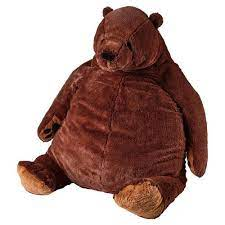
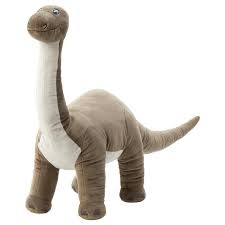
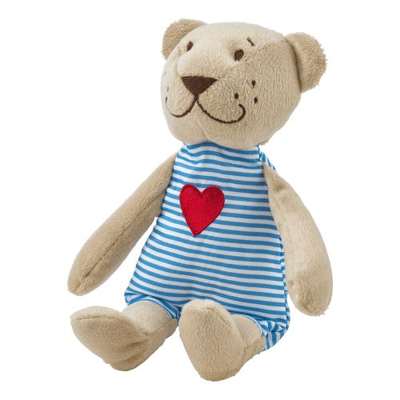

Игрушки Икеи
Биг Трэш
Биг Трэш — это инновационное изобретение лучших мастеров игрушек Икеи. Задумка, по которой создавался Биг Трэш, очень проста: мы взяли и возвели Трэша в квадрат. Изумительное сочетание большого размера, мягкого пуза и шоколадного окраса — это рецепт настоящего счастья. Биг Трэш также умеет отменять пары, наводить порчу и готовить еду (дополнительная опция за отдельную плату). Биг Трэш может выслушивать ваше нытье и смотреть с вами «Бегущего в лабиринте» в сотый раз. Смерть Ньюта — это то, что уничтожит вас изнутри, но Биг Трэш будет лежать под боком и гладить вас своими кривыми лапами. Продается Биг Трэш во всех странах, кроме России (не заслужили). Go crazy, go stupid // Go crazy, go stupid // Cut my, cut my, cut my hair // Push me, push me down the stair // Shoelace, that's my fucking belt // Laughin’ at me, I don't care // Cut my, cut my, cut my hair // Push me, push me down the stair // Go crazy, go stupid // Go crazy, go stupid // Every man has been a boy // Sue me boy, you need a lawyer // She don't want no puppy love // Find out that she into girls // Bernie Sanders, that’s my mans // Call me back, I ain't got no plans // Donald Trump is wack as fuck // Orange juice up in my, in my // Sippy cup, eat a pretty girl for lunch // Taking her out, we eating brunch // Go to a bar with Captain Crunch // Mmm-hmm, give me my mo'fuckin' credit // I'm in this bitch like a dentist // Go crazy, go stupid // Go crazy, go stupid // Man, I might just cut my, cut my, cut my hair // Push me, push me down the stair // Shoelace, that's my fuckin' belt // Laughin' at me, I don’t care // Cut my, cut my, cut my hair // Push me, push me down the stair // Go crazy, go stupid // Go crazy, go stupid // I’m just tryna find the rainbow // Can you please come help me // Shawty looking like an angel // And the booty friendly // Gucci, Gucci on my hip // Labels on my fucking shh // Kiss me, kiss me on my lip // Kiss me, kiss me on my ah // Feel like a leopard (rawr) // Damn, she looks so cute // Hope her boo a loser // Hope she loose her boo // Go crazy, go stupid // Go crazy, go stupid // Go crazy, go stupid // Go crazy
Какула
 Какула — это самое выгодное вложение трех ваших стипендий. Всего три месяца голодовки, и Какула в ваших руках. Поверьте, оно стоит того. Мягкая набивка, окрас цвета морской волны, милые зубки, которые можно потрогать и не быть укушенным. Форма Какулы обтекаема и сделана такой специально для того, чтобы вы могли обнимать ее во сне (будьте осторожны и не задушите бедняжку). Вот еще несколько плюсов Какулы, которые могут повлиять на ваше решение: она молчит, в отличие от детей; она не пинается, как недовольные люди в метро; ее не нужно кормить (ведь вы даже себя не можете содержать, о чем речь); она просто крута (а еще в джакузи, и это факт). Пыльным зеркалом не увидеть боль — // Напряжение сердца уходит в эфир. // И в итоге немногие будут с тобой, // Когда кончится лес и начнется тир. // Те, что родились с пеной у рта, // В исступлении будут топтать твой огонь. // Живи в облаках, если хочешь летать; // Если любишь ходить – беги бегом. // Любопытно, каков результат игры, // И не рано ли высунут нос из норы, // И хватит ли нас до той поры? // Но сейчас мы лишь звенья в шествии рыб. // Строитель ступеней встал у руля, // Но лестница – это для тех, кто устал. // А нам, обитателям звездных полян, // Не нужен его пьедестал. // Пришедшие рано уйдут одни – // Время накажет своих рабов. // Успевшие к пиру забудут о них, // Как цветы забывают о пользе шипов. // Любопытно, каков результат игры, // И не рано ли высунут нос из норы, // И хватит ли нас до той поры? // Но сейчас мы лишь звенья в шествии рыб. // Реки устало текут в моря, // Повторение судеб – это закон. // Уйдем по спирали туда, где заря, // Уйдем от иллюзий туда, где покой! // Любопытно, каков результат игры, // И не рано ли высунут нос из норы, // И хватит ли нас до той поры? // Но сейчас мы лишь звенья… // Мы лишь звенья…
Какула — это самое выгодное вложение трех ваших стипендий. Всего три месяца голодовки, и Какула в ваших руках. Поверьте, оно стоит того. Мягкая набивка, окрас цвета морской волны, милые зубки, которые можно потрогать и не быть укушенным. Форма Какулы обтекаема и сделана такой специально для того, чтобы вы могли обнимать ее во сне (будьте осторожны и не задушите бедняжку). Вот еще несколько плюсов Какулы, которые могут повлиять на ваше решение: она молчит, в отличие от детей; она не пинается, как недовольные люди в метро; ее не нужно кормить (ведь вы даже себя не можете содержать, о чем речь); она просто крута (а еще в джакузи, и это факт). Пыльным зеркалом не увидеть боль — // Напряжение сердца уходит в эфир. // И в итоге немногие будут с тобой, // Когда кончится лес и начнется тир. // Те, что родились с пеной у рта, // В исступлении будут топтать твой огонь. // Живи в облаках, если хочешь летать; // Если любишь ходить – беги бегом. // Любопытно, каков результат игры, // И не рано ли высунут нос из норы, // И хватит ли нас до той поры? // Но сейчас мы лишь звенья в шествии рыб. // Строитель ступеней встал у руля, // Но лестница – это для тех, кто устал. // А нам, обитателям звездных полян, // Не нужен его пьедестал. // Пришедшие рано уйдут одни – // Время накажет своих рабов. // Успевшие к пиру забудут о них, // Как цветы забывают о пользе шипов. // Любопытно, каков результат игры, // И не рано ли высунут нос из норы, // И хватит ли нас до той поры? // Но сейчас мы лишь звенья в шествии рыб. // Реки устало текут в моря, // Повторение судеб – это закон. // Уйдем по спирали туда, где заря, // Уйдем от иллюзий туда, где покой! // Любопытно, каков результат игры, // И не рано ли высунут нос из норы, // И хватит ли нас до той поры? // Но сейчас мы лишь звенья… // Мы лишь звенья…
Динозавл
Знаете, почему вы до сих пор читаете этот текст? Потому что наши игрушки великолепны и заслуживают быть купленными. Представляем вам Динозавла — любимчика всех маленьких и шепелявых. Его предками были брахиозавры (вы хотя бы знаете, кто это?). Именно от них Динозавл унаследовал длинную шею, которой удобно обнимать или душить, кому как больше нравится.

Изумрудный цвет тела, мягкая шея, умильные глазки, которые заглядывают в самую темную часть твоей души. Все Динозавлы должны обрести дом. Это разве не причина сейчас же позвонить по номеру +7 (916) 746-01-32 и заказать пару?.
Звезды падают с неба, это всегда так красиво // Но когда прямо на Землю, то динозаврикам больно // Я возвращался со школы, тогда меня осенило // Что будет, если не слушать? Что будет, если попробовать? // Ведь сложность заключается лишь в том // Что ты не можешь дать себе ответ // На тот вопрос, который задаёшь // Зачем тебе одно и то же каждый день? // Задумайся о том, зачем живешь // Туда-сюда, ха, туда-сюда, ха // Туда-сюда, одно и то же каждый день // Туда-сюда, ха, туда-сюда, ха // С тобою ходит только заебавшаяся тень // Туда-сюда, ха, туда-сюда, ха // Туда-сюда, одно и то же каждый день // Туда-сюда, ха, туда-сюда, ха // С тобою ходит только заебавшаяся тень // Динозаврики бегали, динозаврики прятались // Но кровавый театр опустил кровавый занавес // И за полтора месяца динозавры поплавились // Теперь давай сравнивать, чем вы отличаетесь // Туда-сюда, ха (Эй!), туда-сюда, ха (Эй!) // Туда-сюда, одно и то же каждый день // Туда-сюда, ха (Эй!), туда-сюда, ха (Эй!) // С тобою ходит только заебавшаяся тень // Туда-сюда, ха (Эй!), туда-сюда, ха (Эй!) // Туда-сюда, одно и то же каждый день // Туда-сюда, ха (Эй!), туда-сюда, ха (Эй!) // С тобою ходит только заебавшаяся тень // Я — динозавр, и я решил не поступать, как все — не умира-а-ать // Метеорит упал, похоронив под собой всех // А я забрался прям наверх, я посмотрел это кино // Я — динозавр, и я решил не поступать, как все — не умира-а-ать // Метеорит упал, похоронив под собой всех // А я забрался прям наверх, я посмотрел это кино
Трэш
Вот он, основатель компании Икеа. Ему принадлежит 51% наших акций. Он знает каждого сотрудника в лицо. Он столько раз видел МИПК, что настолько преисполнился в своем познании... Ладно, мы все еще не назвали его имя. Это... Трэш! Покоритель девичьих сердец (и не только). Именно поэтому на его груди красуется алое сердце — символ любви и страданий. Его матроску хочет себе каждый человек, который когда-либо ее видел. Мягкие лапки способны гладить ваши руки нежнее, чем кто-либо еще. Желаете приобрести? Шиш вам. Он только наш. Oh who is she? // A misty memory // A haunting face, // Is she a lost embrace? // Am I in love with just a theme? // Or is Ayesha just a dream? // A mystery // Oh who is she? // Oh who is she? // A misty memory // A haunting face, // Is she a lost embrace? // I call her name // Across an endless plain // She'll answer me // Where ever she may be // Oh who is she? // A misty memory // A haunting face, // Is she a lost embrace? // Somewhere across the sea of time // A love immortal just like mine // Will come to me eternally // Immortal she // Returns to me